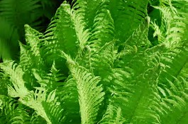

FERNS
Ferns are perennials that come back each year.
Ferns multiply over time.

- Fern fronds will die back after it begins to frost at night.
- Cut the dead fronds back.
- Water.
- Mulch after cutting back, to protect the crowns and underground roots.
Go to Home Page